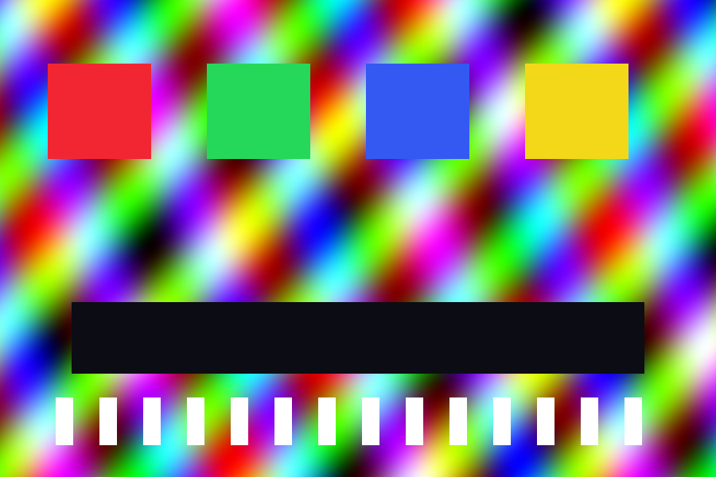

Full effect

Your toggles
Left is the complete effect. Right follows the toggles, so you can switch each
layer off and see exactly what it contributes. Everything runs in WebGL2 from a
shader reverse-engineered out of macOS 26/27's QuartzCore — no
backdrop-filter, which fundamentally cannot do the refraction.
